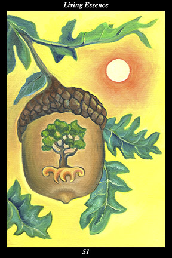

 | IMAGEAn acorn hangs from a twig, a great oak tree already fully grown within it. The noonday sun shines in the cloudless sky above.
|
INTERPRETATION
This hexagram depicts the spirit of the seed, which contains all of creation within its secret heart. The acorn symbolizes the living potential that dwells within every individual creation. The tree already grown within the seed symbolizes the fulfilled promise of potential that is already alive within every creation. The trunk of that tree symbolizes the long continuity of your spiritual lineage, its branches symbolize the sheltering and protection of your spirit, and its roots symbolize your hidden foundation. The twig from which the acorn hangs is a symbol of the preceding generations, which continue to live and create. The noonday sun in a cloudless sky symbolizes the full force of divine love, which creates and sustains all of creation. Taken together, these symbols mean that you accept your blessings with the sole intent of returning them tenfold to the world.
ACTION
The spirit warrior wins the sacred war against the enemy-within by keeping what is alive and shedding what is dead. For the spirit warrior, that which is alive is the essential and indestructible purity of the soul. Where the enemy-within seeks to keep alive all the impurities that defeat the soul’s best intentions, the spirit warrior sheds each impurity as soon as it is discovered. By living wholly in the purity of the seed, the spirit warrior allows each dead leaf to fall away as soon as its season passes. It is a time for filling your heart with the depth of compassion that inspires genuine acts of benevolence and loving-kindness. The power to bring
benefit to others obeys the same law as water: the channel which is most empty and clear of obstructions carries the greatest abundance. Because you are motivated by selfless compassion rather than a desire for personal evolution or achievement, you are carried along by the very
benefit you bring to others. From tree to seed and from seed to tree, the living essence of
benefit passes: concentrate on the need of others and you find this the most creative and rewarding of times, clear away all inner obstructions and you convey
benefit directly from the source. Because you keep the living seed of loving-kindness alive, you shed the dead leaves of self-interest without even trying: of all the roads home, the road of simplicity has the least obstructions.
INTENT
Essence recognizes essence: voice and echo belong to one another, face and reflection are not different. Shedding the differences between things, the spirit warrior keeps alive that which makes them the same—because all things share a common origin, they share a common destiny. Happiness, well-being, success, and love all flow from the same source—that from which all partake and none may be excluded. Just as the sun shines on all equally, the living potential of spirit is as strong in all as it is in one—and, just as darkness reigns until the sun first rises, we do not awaken this living essence until we keep the gate of the untroubled spirit open and the gate of the troubled spirit closed. By cultivating an untroubled spirit, we are able to see through the world of appearances and into the world of essence within which we already live.
SUMMARY
Just because you can do something doesn’t mean you should: know what to turn down. Simplify your life. Don’t waste your energy. Avoid excitement and exaggeration. Be patient and kind. Slow down. Stop thinking about your own feelings and needs. Try to
benefit others, especially the future generations. This is the most productive time of your life—what will you make?
THE LINE CHANGES
1° Too much idle conjecturing about matters that have not yet occurred results in physical and emotional distress. Take your mind off purposeless imaginings by engaging in physical activities. Make no plans, decisions, or commitments now.
2° Your vision resonates with others, bringing you lifelong allies. Document your emerging vision since you will want to revisit it later. Consider the words of your predecessors before deciding on a long-range goal.
3° Even those able to use their creative vision to make a living often find this diminishes their creativity. It is best to keep the two separate, at least for the time being. Work, explore, investigate—the landscape is filled with vast tracts of untrod terrain.
4° If your vision serves others, then it is time to make it public. If it still serves its own unfolding, then it is still time to keep it private. If in doubt, it is best to work in private—you may be tempted to share your ideas with those close to you but avoid doing so until your vision has crystalized.
5° The window of opportunity opens—you enter the height of creative power, your ability to give your vision expression reaches its peak. Do not hesitate to extend your influence as far as possible. Look for ways to reach people that others have not imagined.
6° When the imaginative power wanes, stop producing new work. Return to the origins of your vision and rework them in light of what you know now. Do not listen to others appealing to your vanity for their own self-interest.